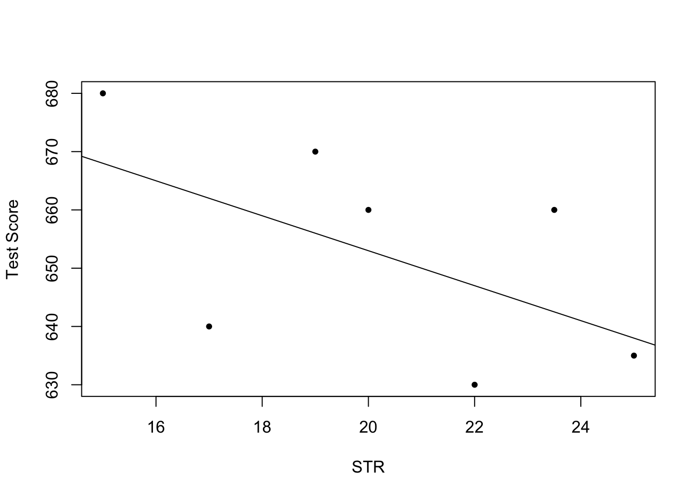
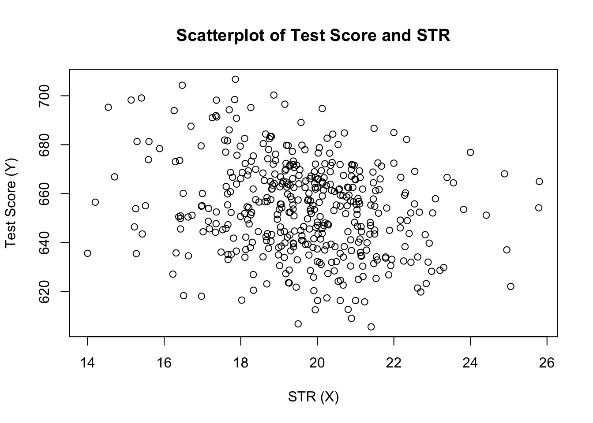
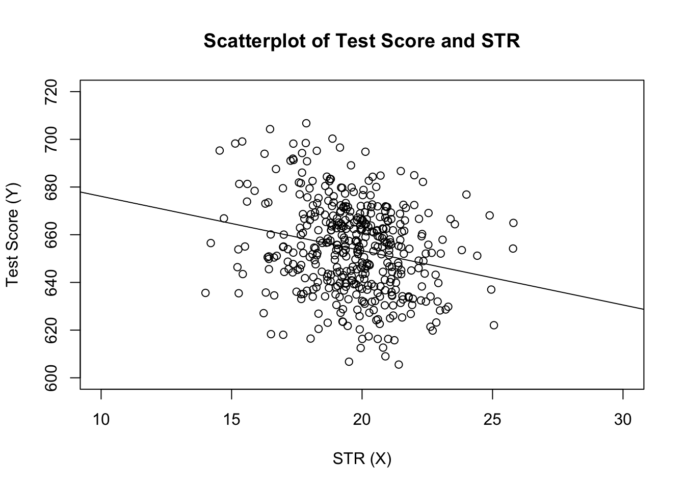
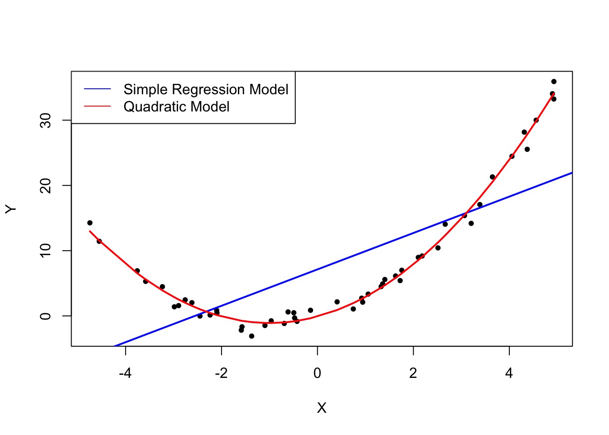
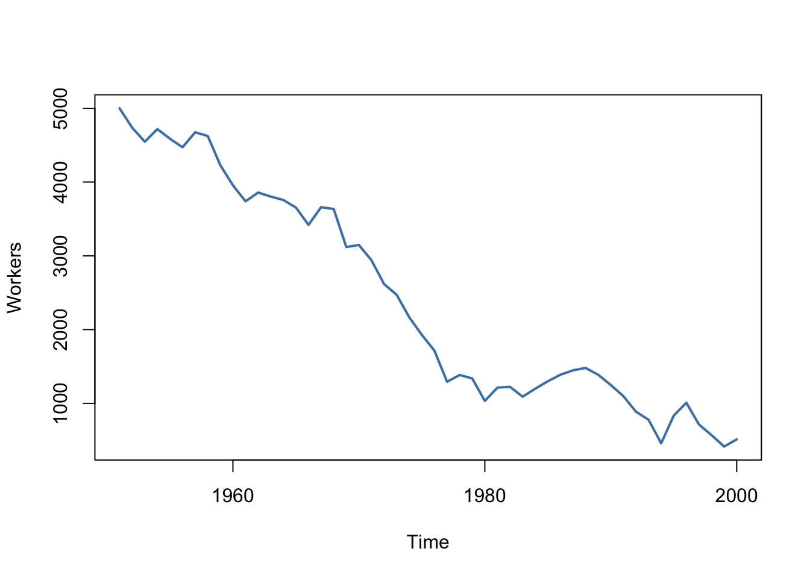
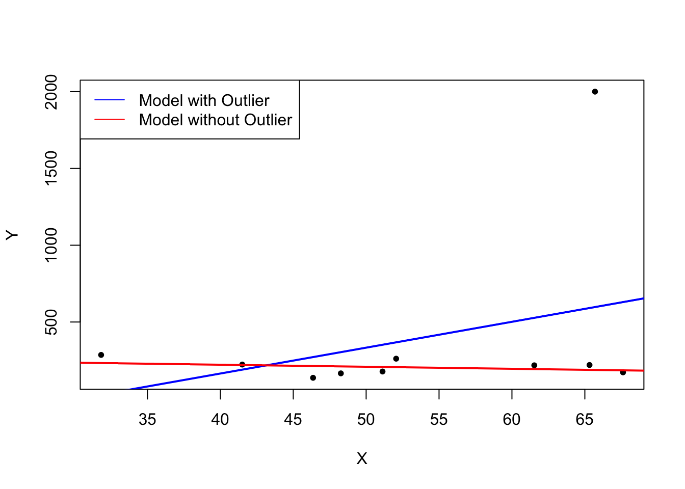
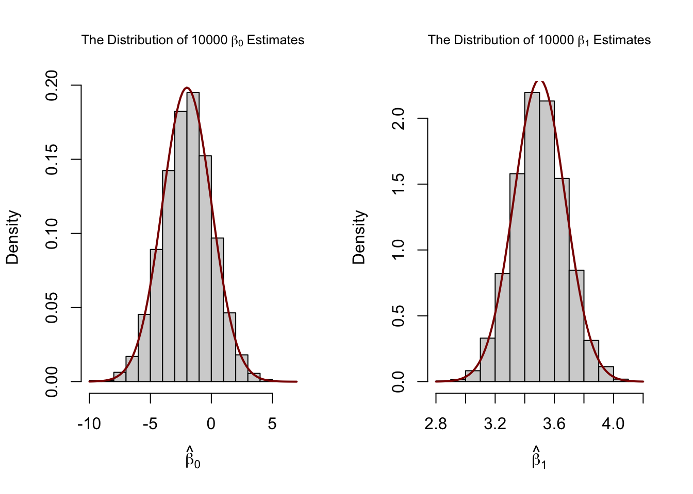
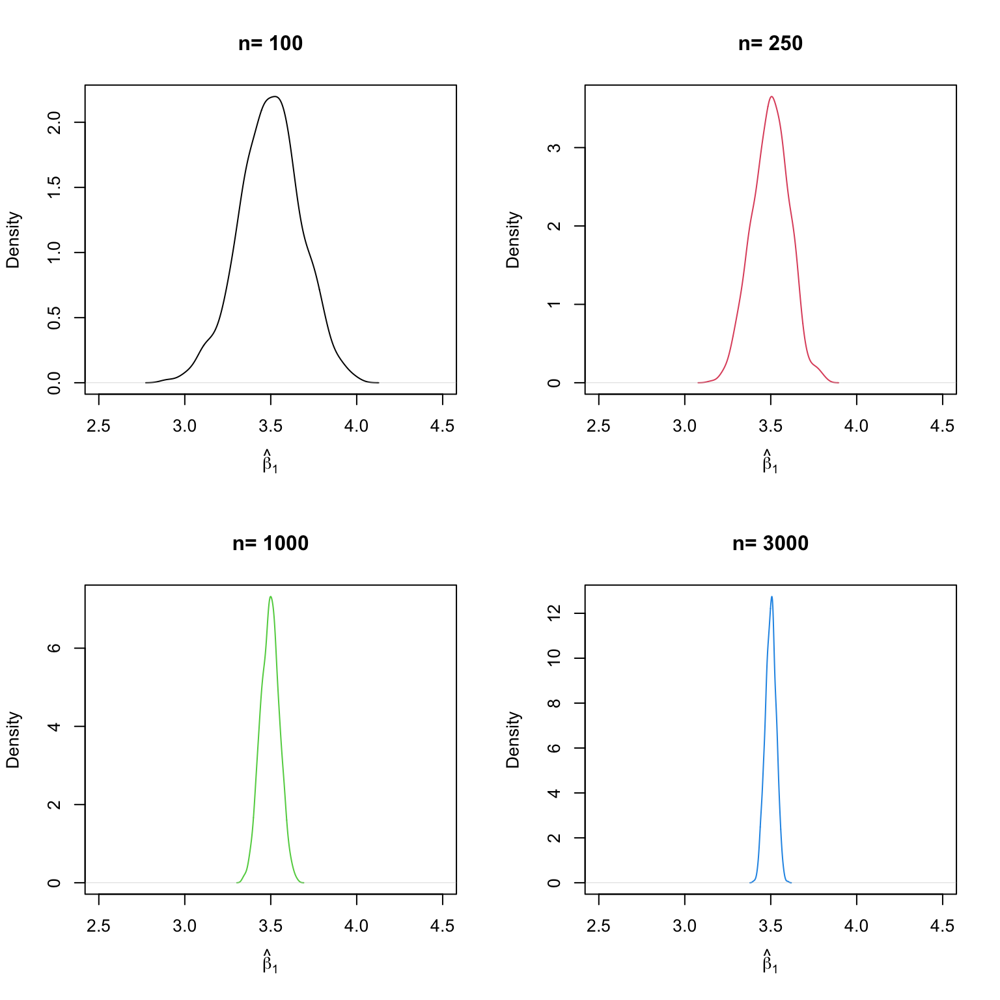
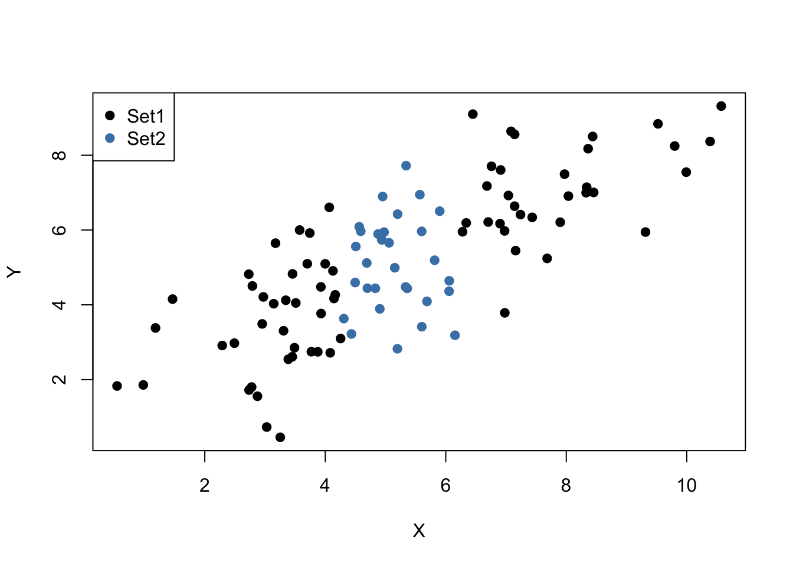
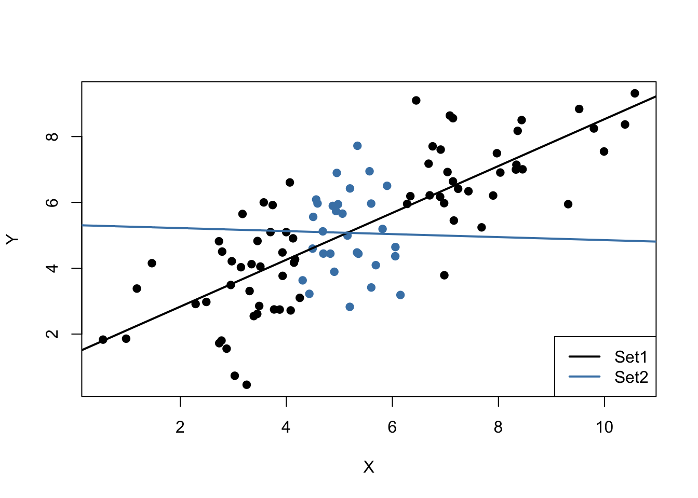

4 Linear Regression with One Regressor
This chapter introduces the basics in linear regression and shows how to perform regression analysis in R. In linear regression, the aim is to model the relationship between a dependent variable \(Y\) and one or more explanatory variables denoted by \(X_1, X_2, \dots, X_k\). Following the book we will focus on the concept of simple linear regression throughout the whole chapter. In simple linear regression, there is just one explanatory variable \(X_1\).
If, for example, a school cuts its class sizes by hiring new teachers, that is, the school lowers \(X_1\), the student-teacher ratios of its classes, how would this affect \(Y\), the performance of the students involved in a standardized test? With linear regression we can not only examine whether the student-teacher ratio does have an impact on the test results but we can also learn about the direction and the strength of this effect.
The following packages are needed for reproducing the code presented in this chapter:
AER - accompanies the Book Applied Econometrics with R C. Kleiber and Zeileis (2008) and provides useful functions and data sets.
MASS - a collection of functions for applied statistics.
Make sure these are installed before you go ahead and try to replicate the examples. The safest way to do so is by checking whether the following code chunk executes without any errors.
4.1 Simple Linear Regression
To start with an easy example, consider the following combinations of average test score and the average student-teacher ratio in some fictional school districts.
To work with these data in R we begin by generating two vectors: one for the student-teacher ratios (STR) and one for test scores (TestScore), both containing the data from the table above.
# Create sample data
STR <- c(15, 17, 19, 20, 22, 23.5, 25)
TestScore <- c(680, 640, 670, 660, 630, 660, 635)
# Print out sample data
STR
#> [1] 15.0 17.0 19.0 20.0 22.0 23.5 25.0
TestScore
#> [1] 680 640 670 660 630 660 635To build simple linear regression model, we hypothesize that the relationship between dependent and independent variable is linear, formally: \[ Y = b \cdot X + a. \] For now, let us suppose that the function which relates test score and student-teacher ratio to each other is \[TestScore = 713 - 3 \times STR.\]
It is always a good idea to visualize the data you work with. Here, it is suitable to use plot() to produce a scatterplot with STR on the \(x\)-axis and TestScore on the \(y\)-axis. Just call plot(y_variable ~ x_variable) whereby y_variable and x_variable are placeholders for the vectors of observations we want to plot. Furthermore, we might want to add a systematic relationship to the plot. To draw a straight line, R provides the function abline(). We just have to call this function with arguments a (representing the intercept)
and b (representing the slope) after executing plot() in order to add the line to our plot.
The following code reproduces Figure 4.1 from the textbook.
# create a scatterplot of the data
plot(TestScore ~ STR,ylab="Test Score",pch=20)
# add the systematic relationship to the plot
abline(a = 713, b = -3)
We find that the line does not touch any of the points although we claimed that it represents the systematic relationship. The reason for this is randomness. Most of the time there are additional influences which imply that there is no bivariate relationship between the two variables.
In order to account for these differences between observed data and the systematic relationship, we extend our model from above by an error term \(u\) which captures additional random effects. Put differently, \(u\) accounts for all the differences between the regression line and the actual observed data. Beside pure randomness, these deviations could also arise from measurement errors or, as will be discussed later, could be the consequence of leaving out other factors that are relevant in explaining the dependent variable.
Which other factors are plausible in our example? For one thing, the test scores might be driven by the teachers’ quality and the background of the students. It is also possible that in some classes, the students were lucky on the test days and thus achieved higher scores. For now, we will summarize such influences by an additive component:
\[ TestScore = \beta_0 + \beta_1 \times STR + \text{other factors}. \]
Of course this idea is very general as it can be easily extended to other situations that can be described with a linear model. Hence, the basic linear regression model we will work with is
\[ Y_i = \beta_0 + \beta_1 X_i + u_i. \]
Key Concept 4.1 summarizes the linear regression model and its terminology.
Key Concept 4.1
Terminology for the Linear Regression Model with a Single Regressor
The linear regression model is
\[Y_i = \beta_0 + \beta_1 X_i + u_i,\]
where
- the index \(i\) runs over the observations, \(i=1,\dots,n\);
- \(Y_i\) is the dependent variable, the regressand, or simply the left-hand variable;
- \(X_i\) is the independent variable, the regressor, or simply the right-hand variable;
- \(Y = \beta_0 + \beta_1 X\) is the population regression line also called the population regression function;
- \(\beta_0\) is the intercept of the population regression line;
- \(\beta_1\) is the slope of the population regression line;
- \(u_i\) is the error term.
4.2 Estimating the Coefficients of the Linear Regression Model
In practice, the intercept \(\beta_0\) and slope \(\beta_1\) of the population regression line are unknown. Therefore, we must employ data to estimate both unknown parameters. In the following, a real world example will be used to demonstrate how this is achieved. We want to relate test scores to student-teacher ratios measured in Californian schools. The test score is the district-wide average of reading and math scores for fifth graders. Again, the class size is measured as the number of students divided by the number of teachers (the student-teacher ratio). As for the data, the California School data set (CASchools) comes with an R package called AER, an acronym for Applied Econometrics with R (Christian Kleiber and Zeileis 2008). After installing the package with install.packages(“AER”) and attaching it with library(AER) the data set can be loaded using the function data().
## # install the AER package (once)
## install.packages("AER")
##
## # load the AER package
library(AER)
# load the the data set in the workspace
data(CASchools)Once a package has been installed it is available for use at further occasions when invoked with library() — there is no need to run install.packages() again!
It is interesting to know what kind of object we are dealing with. class() returns the class of an object. Depending on the class of an object some functions (for example plot() and summary()) behave differently.
Let us check the class of the object CASchools.
It turns out that CASchools is of class data.frame which is a convenient format to work with, especially for performing regression analysis.
With help of head() we get a first overview of our data. This function shows only the first 6 rows of the data set which prevents an overcrowded console output.
head(CASchools)
#> district school county grades students teachers
#> 1 75119 Sunol Glen Unified Alameda KK-08 195 10.90
#> 2 61499 Manzanita Elementary Butte KK-08 240 11.15
#> 3 61549 Thermalito Union Elementary Butte KK-08 1550 82.90
#> 4 61457 Golden Feather Union Elementary Butte KK-08 243 14.00
#> 5 61523 Palermo Union Elementary Butte KK-08 1335 71.50
#> 6 62042 Burrel Union Elementary Fresno KK-08 137 6.40
#> calworks lunch computer expenditure income english read math
#> 1 0.5102 2.0408 67 6384.911 22.690001 0.000000 691.6 690.0
#> 2 15.4167 47.9167 101 5099.381 9.824000 4.583333 660.5 661.9
#> 3 55.0323 76.3226 169 5501.955 8.978000 30.000002 636.3 650.9
#> 4 36.4754 77.0492 85 7101.831 8.978000 0.000000 651.9 643.5
#> 5 33.1086 78.4270 171 5235.988 9.080333 13.857677 641.8 639.9
#> 6 12.3188 86.9565 25 5580.147 10.415000 12.408759 605.7 605.4We find that the data set consists of plenty of variables and that most of them are numeric.
By the way: an alternative to class() and head() is str() which is deduced from ‘structure’ and gives a comprehensive overview of the object. Try!
Turning back to CASchools, the two variables we are interested in (i.e., average test score and the student-teacher ratio) are not included. However, it is possible to calculate both from the provided data. To obtain the student-teacher ratios, we simply divide the number of students by the number of teachers. The average test score is the arithmetic mean of the test score for reading and the score of the math test. The next code chunk shows how the two variables can be constructed as vectors and how they are appended to CASchools.
# compute STR and append it to CASchools
CASchools$STR <- CASchools$students/CASchools$teachers
# compute TestScore and append it to CASchools
CASchools$score <- (CASchools$read + CASchools$math)/2 If we ran head(CASchools) again we would find the two variables of interest as additional columns named STR and score (check this!).
Table 4.1 from the textbook summarizes the distribution of test scores and student-teacher ratios. There are several functions which can be used to produce similar results, e.g.,
mean() (computes the arithmetic mean of the provided numbers),
sd() (computes the sample standard deviation),
quantile() (returns a vector of the specified sample quantiles for the data).
The next code chunk shows how to achieve this. First, we compute summary statistics on the columns STR and score of CASchools. In order to get nice output we gather the measures in a data.frame named DistributionSummary.
# compute sample averages of STR and score
avg_STR <- mean(CASchools$STR)
avg_score <- mean(CASchools$score)
# compute sample standard deviations of STR and score
sd_STR <- sd(CASchools$STR)
sd_score <- sd(CASchools$score)
# set up a vector of percentiles and compute the quantiles
quantiles <- c(0.10, 0.25, 0.4, 0.5, 0.6, 0.75, 0.9)
quant_STR <- quantile(CASchools$STR, quantiles)
quant_score <- quantile(CASchools$score, quantiles)
# gather everything in a data.frame
DistributionSummary <- data.frame(Average = c(avg_STR, avg_score),
StandardDeviation = c(sd_STR, sd_score),
quantile = rbind(quant_STR, quant_score))
# print the summary to the console
DistributionSummary
#> Average StandardDeviation quantile.10. quantile.25. quantile.40.
#> quant_STR 19.64043 1.891812 17.3486 18.58236 19.26618
#> quant_score 654.15655 19.053347 630.3950 640.05000 649.06999
#> quantile.50. quantile.60. quantile.75. quantile.90.
#> quant_STR 19.72321 20.0783 20.87181 21.86741
#> quant_score 654.45000 659.4000 666.66249 678.85999As for the sample data, we use plot(). This allows us to detect characteristics of our data, such as outliers which are harder to discover by looking at mere numbers. This time we add some additional arguments to the call of plot().
The first argument in our call of plot(), score ~ STR, is again a formula that states variables on the y- and the x-axis. However, this time the two variables are not saved in separate vectors but are columns of CASchools. Therefore, R would not find them without the argument data being correctly specified. data must be in accordance with the name of the data.frame to which the variables belong to, in this case CASchools. Further arguments are used to change the appearance of the plot: main adds a title, xlab and ylab add custom labels to both axes.
plot(score ~ STR,
data = CASchools,
main = "Scatterplot of Test Score and STR",
xlab = "STR (X)",
ylab = "Test Score (Y)")
The plot (Figure 4.2 in the book) shows the scatterplot of all observations on the student-teacher ratio and test score. We see that the points are strongly scattered, and that the variables are negatively correlated. That is, we expect to observe lower test scores in bigger classes.
The function cor() (see ?cor for further info) can be used to compute the correlation between two numeric vectors.
As the scatterplot already suggests, the correlation is negative but rather weak.
The task we are currently facing is to find a line that best fits the data. We could opt for graphical inspection and correlation analysis and then select the best fitting line by eyeballing. However, this would be rather subjective: different observers would draw different regression lines. On this account, we are interested in techniques that are less arbitrary. Such a technique is given by ordinary least squares (OLS) estimation.
The Ordinary Least Squares Estimator
The OLS estimator chooses the regression coefficients such that the estimated regression line is as “close” as possible to the observed data points. Here, closeness is measured by the sum of the squared mistakes made in predicting \(Y\) given \(X\). Let \(b_0\) and \(b_1\) be some estimators of \(\beta_0\) and \(\beta_1\). Then the sum of squared estimation mistakes can be expressed as
\[ \sum^n_{i = 1} (Y_i - b_0 - b_1 X_i)^2. \]
The OLS estimator in the simple regression model is the pair of estimators for intercept and slope that minimizes the expression above. The derivation of the OLS estimators for both parameters are presented in Appendix 4.1 of the book. The results are summarized in Key Concept 4.2.
Key Concept 4.2
The OLS Estimator, Predicted Values, and Residuals
The OLS estimators of the slope \(\beta_1\) and the intercept \(\beta_0\) in the simple linear regression model are \[\begin{align} \hat\beta_1 & = \frac{ \sum_{i = 1}^n (X_i - \overline{X})(Y_i - \overline{Y}) } { \sum_{i=1}^n (X_i - \overline{X})^2}, \\ \\ \hat\beta_0 & = \overline{Y} - \hat\beta_1 \overline{X}. \end{align}\] The OLS predicted values \(\widehat{Y}_i\) and residuals \(\hat{u}_i\) are \[\begin{align} \widehat{Y}_i & = \hat\beta_0 + \hat\beta_1 X_i,\\ \\ \hat{u}_i & = Y_i - \widehat{Y}_i. \end{align}\]
The estimated intercept \(\hat{\beta}_0\), the slope parameter \(\hat{\beta}_1\) and the residuals \(\left(\hat{u}_i\right)\) are computed from a sample of \(n\) observations of \(X_i\) and \(Y_i\),\(i\)=\(1\), \(...\),\(n\). These are estimates of the unknown population intercept \(\left(\beta_0 \right)\), slope \(\left(\beta_1\right)\), and error term \((u_i)\).The formulas presented above may not be very intuitive at first glance. The following interactive application aims to help you understand the mechanics of OLS. You can add observations by clicking into the coordinate system where the data are represented by points. Once two or more observations are available, the application computes a regression line using OLS and some statistics which are displayed in the right panel. The results are updated as you add further observations to the left panel. A double-click resets the application, i.e., all data are removed.
There are many possible ways to compute \(\hat{\beta}_0\) and \(\hat{\beta}_1\) in R. For example, we could implement the formulas presented in Key Concept 4.2 with two of R’s most basic functions: mean() and sum(). Before doing so we attach the CASchools dataset.
attach(CASchools) # allows to use the variables contained in CASchools directly
# compute beta_1_hat
beta_1 <- sum((STR - mean(STR)) * (score - mean(score))) / sum((STR - mean(STR))^2)
# compute beta_0_hat
beta_0 <- mean(score) - beta_1 * mean(STR)
# print the results to the console
beta_1
#> [1] -2.279808
beta_0
#> [1] 698.9329Calling attach(CASchools) enables us to address a variable contained in CASchools by its name: it is no longer necessary to use the $ operator in conjunction with the dataset: R may evaluate the variable name directly.
R uses the object in the user environment if this object shares the name of variable contained in an attached database. However, it is a better practice to always use distinctive names in order to avoid such (seeming) ambivalences!Notice that we address variables contained in the attached dataset CASchools directly for the rest of this chapter!
Of course, there are even more manual ways to perform these tasks. With OLS being one of the most widely-used estimation techniques, R of course already contains a built-in function named lm() (linear model) which can be used to carry out regression analysis.
The first argument of the function to be specified is, similar to plot(), the regression formula with the basic syntax y ~ x where y is the dependent variable and x the explanatory variable. The argument data determines the data set to be used in the regression. We now revisit the example from the book where the relationship between the test scores and the class sizes is analyzed. The following code uses lm() to replicate the results presented in figure 4.3 of the book.
# estimate the model and assign the result to linear_model
linear_model <- lm(score ~ STR, data = CASchools)
# print the standard output of the estimated lm object to the console
linear_model
#>
#> Call:
#> lm(formula = score ~ STR, data = CASchools)
#>
#> Coefficients:
#> (Intercept) STR
#> 698.93 -2.28Let us add the estimated regression line to the plot. This time we also enlarge the ranges of both axes by setting the arguments xlim and ylim.
# plot the data
plot(score ~ STR,
data = CASchools,
main = "Scatterplot of Test Score and STR",
xlab = "STR (X)",
ylab = "Test Score (Y)",
xlim = c(10, 30),
ylim = c(600, 720))
# add the regression line
abline(linear_model) 
Did you notice that this time, we did not pass the intercept and slope parameters to abline? If you call abline() on an object of class lm which only contains a single regressor, R draws the regression line automatically!
4.3 Measures of Fit
After fitting a linear regression model, a natural question is how well the model describes the data. Visually, this amounts to assessing whether the observations are tightly clustered around the regression line. Both the coefficient of determination and the standard error of the regression measure how well the OLS Regression line fits the data.
The Coefficient of Determination
\(R^2\), the coefficient of determination, is the fraction of the sample variance of \(Y_i\) that is explained by \(X_i\). Mathematically, the \(R^2\) can be written as the ratio of the explained sum of squares to the total sum of squares. The explained sum of squares (\(ESS\)) is the sum of squared deviations of the predicted values \(\hat{Y_i}\), from the average of the \(Y_i\). The total sum of squares (\(TSS\)) is the sum of squared deviations of the \(Y_i\) from their average. Thus we have
\[\begin{align} ESS & = \sum_{i = 1}^n \left( \hat{Y_i} - \overline{Y} \right)^2, \\ TSS & = \sum_{i = 1}^n \left( Y_i - \overline{Y} \right)^2, \\ R^2 & = \frac{ESS}{TSS}. \end{align}\]
Since \(TSS = ESS + SSR\) we can also write
\[ R^2 = 1- \frac{SSR}{TSS}, \]
where \(SSR\) is the sum of squared residuals, a measure for the errors made when predicting \(Y\) by \(X\). The \(SSR\) is defined as
\[ SSR = \sum_{i=1}^n \hat{u}_i^2. \]
\(R^2\) lies between \(0\) and \(1\). It is easy to see that a perfect fit, i.e., no errors made when fitting the regression line, implies \(R^2 = 1\) then we have \(SSR=0\). On the contrary, if our estimated regression line does not explain any variation in the \(Y_i\), we have \(ESS=0\) and consequently \(R^2=0\).
The Standard Error of the Regression
The Standard Error of the Regression (\(SER\)) is an estimator of the standard deviation of the residuals \(\hat{u}_i\). As such it measures the magnitude of a typical deviation from the regression line, i.e., the magnitude of a typical residual.
\[ SER = s_{\hat{u}} = \sqrt{s_{\hat{u}}^2} \ \ \ \text{where} \ \ \ s_{\hat{u} }^2 = \frac{1}{n-2} \sum_{i = 1}^n \hat{u}^2_i = \frac{SSR}{n - 2} \]
Remember that the \(u_i\) are unobserved. This is why we use their estimated counterparts, the residuals \(\hat{u}_i\), instead. See Chapter 4.3 of the book for a more detailed comment on the \(SER\).
Application to the Test Score Data
Both measures of fit can be obtained by using the function summary() with an lm object provided as the only argument. While the function lm() only prints out the estimated coefficients to the console, summary() provides additional predefined information such as the regression’s \(R^2\) and the \(SER\).
mod_summary <- summary(linear_model)
mod_summary
#>
#> Call:
#> lm(formula = score ~ STR, data = CASchools)
#>
#> Residuals:
#> Min 1Q Median 3Q Max
#> -47.727 -14.251 0.483 12.822 48.540
#>
#> Coefficients:
#> Estimate Std. Error t value Pr(>|t|)
#> (Intercept) 698.9329 9.4675 73.825 < 2e-16 ***
#> STR -2.2798 0.4798 -4.751 2.78e-06 ***
#> ---
#> Signif. codes: 0 '***' 0.001 '**' 0.01 '*' 0.05 '.' 0.1 ' ' 1
#>
#> Residual standard error: 18.58 on 418 degrees of freedom
#> Multiple R-squared: 0.05124, Adjusted R-squared: 0.04897
#> F-statistic: 22.58 on 1 and 418 DF, p-value: 2.783e-06The \(R^2\) in the output is called Multiple R-squared and has a value of \(0.051\). Hence, \(5.1 \%\) of the variance of the dependent variable \(score\) is explained by the explanatory variable \(STR\). That is, the regression explains little of the variance in \(score\), and much of the variation in test scores remains unexplained (cf. Figure 4.3 of the book).
The \(SER\) is called Residual standard error and equals \(18.58\). The unit of the \(SER\) is the same as the unit of the dependent variable. That is, on average the deviation of the actual achieved test score and the regression line is \(18.58\) points.
Now, let us check whether summary() uses the same definitions for \(R^2\) and \(SER\) as we do when computing them manually.
# compute R^2 manually
SSR <- sum(mod_summary$residuals^2)
TSS <- sum((score - mean(score))^2)
R2 <- 1 - SSR/TSS
# print the value to the console
R2
#> [1] 0.05124009
# compute SER manually
n <- nrow(CASchools)
SER <- sqrt(SSR / (n-2))
# print the value to the console
SER
#> [1] 18.58097We find that the results coincide. Note that the values provided by summary() are rounded to two decimal places.
4.4 The Least Squares Assumptions
OLS performs well under a quite broad variety of different circumstances. However, there are some assumptions which need to be satisfied in order to ensure that the estimates are normally distributed in large samples (we discuss this in Chapter 4.5).
Key Concept 4.3
The Least Squares Assumptions
\[Y_i = \beta_0 + \beta_1 X_i + u_i \text{, } i = 1,\dots,n\] where
- The error term \(u_i\) has conditional mean zero given \(X_i\): \(E(u_i|X_i) = 0\).
- \((X_i,Y_i), i = 1,\dots,n\) are independent and identically distributed (i.i.d.) draws from their joint distribution.
- Large outliers are unlikely: \(X_i\) and \(Y_i\) have nonzero finite fourth moments.
Assumption 1: The Error Term has Conditional Mean of Zero
This means that no matter which value we choose for \(X\), the error term \(u\) must not show any systematic pattern and must have a mean of \(0\). Consider the case that, unconditionally, \(E(u) = 0\), but for low and high values of \(X\), the error term tends to be positive and for midrange values of \(X\) the error tends to be negative. We can use R to construct such an example. To do so we generate our own data using R’s built-in random number generators.
We will use the following functions:
- runif() - generates uniformly distributed random numbers.
- rnorm() - generates normally distributed random numbers.
- predict() - does predictions based on the results of model fitting functions like lm().
- lines() - adds line segments to an existing plot.
We start by creating a vector containing values that are uniformly distributed on the interval \([-5,5]\). This can be done with the function runif(). We also need to simulate the error term. For this we generate normally distributed random numbers with a mean of \(0\) and a variance of \(1\) using rnorm(). The \(Y\) values are obtained as a quadratic function of the \(X\) values and the error.
After generating the data we estimate both a simple regression model and a quadratic model that also includes the regressor \(X^2\) (this is a multiple regression model, see Chapter 6). Finally, we plot the simulated data and add the estimated regression line of a simple regression model as well as the predictions made with a quadratic model to compare the fit graphically.
# set a seed to make the results reproducible
set.seed(321)
# simulate the data
X <- runif(50, min = -5, max = 5)
u <- rnorm(50, sd = 1)
# the true relation
Y <- X^2 + 2 * X + u
# estimate a simple regression model
mod_simple <- lm(Y ~ X)
# estimate a quadratic regression model
mod_quadratic <- lm( Y ~ X + I(X^2))
# predict using a quadratic model
prediction <- predict(mod_quadratic, data.frame(X = sort(X)))
# plot the results
plot( Y ~ X, col = "black", pch = 20, xlab = "X", ylab = "Y")
abline( mod_simple, col = "blue",lwd=2)
#red line = incorrect linear regression (this violates the first OLS assumption)
lines( sort(X), prediction,col="red",lwd=2)
legend("topleft",
legend = c("Simple Regression Model",
"Quadratic Model"),
cex = 1,
lty = 1,
col = c("blue","red"))
The plot above shows what is meant by \(E(u_i|X_i) = 0\) and why it does not hold for the linear model:
Using the quadratic model (represented by the black curve) we see that there are no systematic deviations of the observation from the predicted relation. It is credible that the assumption is not violated when such a model is employed. However, using a simple linear regression model we see that the assumption is probably violated as \(E(u_i|X_i)\) varies with the \(X_i\).
Assumption 2: Independently and Identically Distributed Data
Most sampling schemes used when collecting data from populations produce i.i.d.-samples. For example, we can use R’s random number generator to randomly select student IDs from a university’s enrollment list and record age \(X\) and earnings \(Y\) of the corresponding students. This is a typical example of simple random sampling and ensures that all the \((X_i, Y_i)\) are drawn randomly from the same population.
A prominent example where the i.i.d. assumption is not fulfilled is time series data where we have observations on the same unit over time. For example, take \(X\) as the number of workers in a production company over time. Due to business transformations, the company cuts jobs periodically by a specific share but there are also some non-deterministic influences that relate to economics, politics etc. Using R we can easily simulate such a process and plot it.
We start the series with a total of 5000 workers and simulate the reduction of employment with an autoregressive process that exhibits a downward movement in the long-run and has normally distributed errors:4
\[ employment_t = -50 + 0.98 \cdot employment_{t-1} + u_t. \]
# set seed
set.seed(123)
# generate a date vector
Date <- seq(as.Date("1951/1/1"), as.Date("2000/1/1"), "years")
# initialize the employment vector
X <- c(5000, rep(NA, length(Date)-1))
# generate time series observations with random influences
for (t in 2:length(Date)) {
X[t] <- -50 + 0.98 * X[t-1] + rnorm(n = 1, sd = 200)
}
#plot the results
plot(x = Date,
y = X,
type = "l",
col = "steelblue",
ylab = "Workers",
xlab = "Time",
lwd=2)
It is evident that the observations on the number of employees cannot be independent in this example: the level of today’s employment is correlated with tomorrow’s employment level. Thus, the i.i.d. assumption is violated.
Assumption 3: Large Outliers are Unlikely
It is easy to come up with situations where extreme observations, i.e., observations that deviate considerably from the usual range of the data, may occur. Such observations are called outliers. Technically speaking, assumption 3 requires that \(X\) and \(Y\) have a finite kurtosis.5
Common cases where we want to exclude or (if possible) correct such outliers is when they are apparently typos, conversion errors or measurement errors. Even if it seems like extreme observations have been recorded correctly, it is advisable to exclude them before estimating a model since OLS suffers from sensitivity to outliers.
What does this mean? One can show that extreme observations receive heavy weighting in the estimation of the unknown regression coefficients when using OLS. Therefore, outliers can lead to strongly distorted estimates of regression coefficients. To get a better impression of this issue, consider the following application where we have placed some sample data on \(X\) and \(Y\) which are highly correlated. The relation between \(X\) and \(Y\) seems to be explained pretty well by the plotted regression line: all of the white data points lie close to the red regression line and we have \(R^2=0.92\).
Now go ahead and add a further observation at, say, \((18.2)\). This observation clearly is an outlier. The result is quite striking: the estimated regression line differs greatly from the one we adjudged to fit the data well. The slope is heavily downward biased and \(R^2\) decreased to a mere \(29\%\)!
Double-click inside the coordinate system to reset the app. Feel free to experiment. Choose different coordinates for the outlier or add additional ones.
The following code roughly reproduces what is shown in figure 4.5 in the book. As done above we use sample data generated using R’s random number functions rnorm() and runif(). We estimate two simple regression models, one based on the original data set and another using a modified set where one observation is changed to be an outlier and then plot the results. In order to understand the complete code you should be familiar with the function sort() which sorts the entries of a numeric vector in ascending order.
# set seed
set.seed(123)
# generate the data
X <- sort(runif(10, min = 30, max = 70))
Y <- rnorm(10 , mean = 200, sd = 50)
Y[9] <- 2000
# fit model with outlier
fit <- lm(Y ~ X)
# fit model without outlier
fitWithoutOutlier <- lm(Y[-9] ~ X[-9])
# plot the results
plot(Y ~ X,pch=20)
abline(fit,lwd=2,col="blue")
abline(fitWithoutOutlier, col = "red",lwd=2)
legend("topleft",
legend = c("Model with Outlier",
"Model without Outlier"),
cex = 1,
lty = 1,
col = c("blue","red"))
4.5 The Sampling Distribution of the OLS Estimator
Because \(\hat{\beta}_0\) and \(\hat{\beta}_1\) are computed from a sample, the estimators themselves are random variables with a probability distribution — the so-called sampling distribution of the estimators — which describes the values they could take on over different samples. Although the sampling distribution of \(\hat\beta_0\) and \(\hat\beta_1\) can be complicated when the sample size is small and generally changes with the number of observations, \(n\), it is possible, provided the assumptions discussed in the book are valid, to make certain statements about it that hold for all \(n\). In particular \[ E(\hat{\beta}_0) = \beta_0 \ \ \text{and} \ \ E(\hat{\beta}_1) = \beta_1,\] that is, \(\hat\beta_0\) and \(\hat\beta_1\) are unbiased estimators of \(\beta_0\) and \(\beta_1\), the true parameters. If the sample is sufficiently large, by the central limit theorem the joint sampling distribution of the estimators is well approximated by the bivariate normal distribution (2.1). This implies that the marginal distributions are also normal in large samples. Core facts on the large-sample distributions of \(\hat\beta_0\) and \(\hat\beta_1\) are presented in Key Concept 4.4.
Key Concept 4.4
Large Sample Distribution of \(\hat\beta_0\) and \(\hat\beta_1\)
If the least squares assumptions in Key Concept 4.3 hold, then in large samples \(\hat\beta_0\) and \(\hat\beta_1\) have a joint normal sampling distribution. The large sample normal distribution of \(\hat\beta_1\) is \(\mathcal{N}(\beta_1, \sigma^2_{\hat\beta_1})\), where the variance of the distribution, \(\sigma^2_{\hat\beta_1}\), is
\[\begin{align} \sigma^2_{\hat\beta_1} = \frac{1}{n} \frac{Var \left[ \left(X_i - \mu_X \right) u_i \right]} {\left[ Var \left(X_i \right) \right]^2}. \tag{4.1} \end{align}\]
The large sample normal distribution of \(\hat\beta_0\) is \(\mathcal{N}(\beta_0, \sigma^2_{\hat\beta_0})\) with
\[\begin{align} \sigma^2_{\hat\beta_0} = \frac{1}{n} \frac{Var \left( H_i u_i \right)}{ \left[ E \left(H_i^2 \right) \right]^2 } \ , \ \text{where} \ \ H_i = 1 - \left[ \frac{\mu_X} {E \left( X_i^2\right)} \right] X_i. \tag{4.2} \end{align}\]
The interactive simulation below continuously generates random samples \((X_i,Y_i)\) of \(200\) observations where \(E(Y\vert X) = 100 + 3X\), estimates a simple regression model, stores the estimate of the slope \(\beta_1\) and visualizes the distribution of the \(\widehat{\beta}_1\)s observed so far using a histogram. The idea here is that for a large number of \(\widehat{\beta}_1\)s, the histogram gives a good approximation of the sampling distribution of the estimator. By decreasing the time between two sampling iterations, it becomes clear that the shape of the histogram approaches the characteristic bell shape of a normal distribution centered at the true slope of \(3\).
(Double-click on the histogram to restart the simulation.)
Simulation Study 1
Whether the statements of Key Concept 4.4 really hold can also be verified using R. For this we first build our own population of \(100000\) observations in total. To do this we need values for the independent variable \(X\), for the error term \(u\), and for the parameters \(\beta_0\) and \(\beta_1\). With these combined in a simple regression model, we compute the dependent variable \(Y\).
In our example we generate the numbers \(X_i\), \(i = 1\), … ,\(100000\) by drawing a random sample from a uniform distribution on the interval \([0,20]\). The realizations of the error terms \(u_i\) are drawn from a standard normal distribution with parameters \(\mu = 0\) and \(\sigma^2 = 100\) (note that rnorm() requires \(\sigma\) as input for the argument sd, see ?rnorm). Furthermore we chose \(\beta_0 = -2\) and \(\beta_1 = 3.5\) so the true model is
\[ Y_i = -2 + 3.5 \cdot X_i. \]
Finally, we store the results in a data.frame.
# simulate data
N <- 100000
X <- runif(N, min = 0, max = 20)
u <- rnorm(N, sd = 10)
# population regression
Y <- -2 + 3.5 * X + u
population <- data.frame(X, Y)From now on we will consider the previously generated data as the true population (which of course would be unknown in a real world application, otherwise there would be no reason to draw a random sample in the first place). The knowledge about the true population and the true relationship between \(Y\) and \(X\) can be used to verify the statements made in Key Concept 4.4.
First, let us calculate the true variances \(\sigma^2_{\hat{\beta}_0}\) and \(\sigma^2_{\hat{\beta}_1}\) for a randomly drawn sample of size \(n = 100\).
# set sample size
n <- 100
# compute the variance of beta_hat_0
H_i <- 1 - mean(X) / mean(X^2) * X
var_b0 <- var(H_i * u) / (n * mean(H_i^2)^2 )
# compute the variance of hat_beta_1
var_b1 <- var( ( X - mean(X) ) * u ) / (n * var(X)^2)Now let us assume that we do not know the true values of \(\beta_0\) and \(\beta_1\) and that it is not possible to observe the whole population. However, we can observe a random sample of \(n\) observations. Then, it would not be possible to compute the true parameters but we could obtain estimates of \(\beta_0\) and \(\beta_1\) from the sample data using OLS. However, we know that these estimates are outcomes of random variables themselves since the observations are randomly sampled from the population. Key Concept 4.4 describes their distributions for large \(n\). When drawing a single sample of size \(n\) it is not possible to make any statement about these distributions. Things change if we repeat the sampling scheme many times and compute the estimates for each sample: using this procedure we simulate outcomes of the respective distributions.
To achieve this in R, we employ the following approach:
- We assign the number of repetitions, say \(10000\), to reps and then initialize a matrix fit where the estimates obtained in each sampling iteration shall be stored row-wise. Thus fit has to be a matrix of dimensions reps\(\times2\).
- In the next step we draw reps random samples of size n from the population and obtain the OLS estimates for each sample. The results are stored as row entries in the outcome matrix fit. This is done using a for() loop.
- At last, we estimate variances of both estimators using the sampled outcomes and plot histograms of the latter. We also add a plot of the density functions belonging to the distributions that follow from Key Concept 4.4. The function bquote() is used to obtain math expressions in the titles and labels of both plots. See ?bquote.
# set repetitions and sample size
n <- 100
reps <- 10000
# initialize the matrix of outcomes
fit <- matrix(ncol = 2, nrow = reps)
# loop sampling and estimation of the coefficients
for (i in 1:reps){
sample <- population[sample(1:N, n), ]
fit[i, ] <- lm(Y ~ X, data = sample)$coefficients
}
# compute variance estimates using outcomes
var(fit[, 1])
#> [1] 4.186832
var(fit[, 2])
#> [1] 0.03096199# divide plotting area as 1-by-2 array
par(mfrow = c(1, 2))
# plot histograms of beta_0 estimates
hist(fit[, 1],
cex.main = 0.8,
main = bquote(The ~ Distribution ~ of ~ 10000 ~ beta[0] ~ Estimates),
xlab = bquote(hat(beta)[0]),
freq = F)
# add true distribution to plot
curve(dnorm(x,
-2,
sqrt(var_b0)),
add = T,
col = "darkred",lwd=2)
# plot histograms of beta_hat_1
hist(fit[, 2],
cex.main = 0.8,
main = bquote(The ~ Distribution ~ of ~ 10000 ~ beta[1] ~ Estimates),
xlab = bquote(hat(beta)[1]),
freq = F)
# add true distribution to plot
curve(dnorm(x,
3.5,
sqrt(var_b1)),
add = T,
col = "darkred",lwd=2)
Our variance estimates support the statements made in Key Concept 4.4, coming close to the theoretical values. The histograms suggest that the distributions of the estimators can be well approximated by the respective theoretical normal distributions stated in Key Concept 4.4.
Simulation Study 2
A further result implied by Key Concept 4.4 is that both estimators are consistent, i.e., they converge in probability to the true parameters we are interested in. This is because they are asymptotically unbiased and their variances converge to \(0\) as \(n\) increases. We can check this by repeating the simulation above for a sequence of increasing sample sizes. This means we no longer assign the sample size but a vector of sample sizes: n <- c(…).
Let us look at the distributions of \(\beta_1\). The idea here is to add an additional call for for() to the code. This is done in order to loop over the vector of sample sizes n. For each of the sample sizes we carry out the same simulation as before but plot a density estimate for the outcomes of each iteration over n. Notice that we have to change n to n[j] in the inner loop to ensure that the j\(^{th}\) element of n is used. In the simulation, we use sample sizes of \(100, 250, 1000\) and \(3000\). Consequently we have a total of four distinct simulations using different sample sizes.
# set seed for reproducibility
set.seed(1)
# set repetitions and the vector of sample sizes
reps <- 1000
n <- c(100, 250, 1000, 3000)
# initialize the matrix of outcomes
fit <- matrix(ncol = 2, nrow = reps)
# divide the plot panel in a 2-by-2 array
par(mfrow = c(2, 2))
# loop sampling and plotting
# outer loop over n
for (j in 1:length(n)) {
# inner loop: sampling and estimating of the coefficients
for (i in 1:reps){
sample <- population[sample(1:N, n[j]), ]
fit[i, ] <- lm(Y ~ X, data = sample)$coefficients
}
# draw density estimates
plot(density(fit[ ,2]), xlim=c(2.5, 4.5),
col = j,
main = paste("n=", n[j]),
xlab = bquote(hat(beta)[1]))
}
We find that, as \(n\) increases, the distribution of \(\hat\beta_1\) concentrates around its mean, i.e., its variance decreases. Put differently, the likelihood of observing estimates close to the true value of \(\beta_1 = 3.5\) grows as we increase the sample size. The same behavior can be observed if we analyze the distribution of \(\hat\beta_0\) instead.
Simulation Study 3
Furthermore, (4.1) reveals that the variance of the OLS estimator for \(\beta_1\) decreases as the variance of the \(X_i\) increases. In other words, as we increase the amount of information provided by the regressor, that is, increasing \(Var(X)\), which is used to estimate \(\beta_1\), we become more confident that the estimate is close to the true value (i.e., \(Var(\hat\beta_1)\) decreases).
We can visualize this by reproducing Figure 4.6 from the book. To do this, we sample observations \((X_i,Y_i)\), \(i=1,\dots,100\) from a bivariate normal distribution with
\[E(X)=E(Y)=5,\] \[Var(X)=Var(Y)=5,\] and \[Cov(X,Y)=4.\]
Formally, this is written down as \[\begin{pmatrix} X \\ Y \end{pmatrix}\overset{i.i.d.}{\sim} \ \mathcal{N}\left[\begin{pmatrix} 5 \\ 5 \end{pmatrix}, \begin{pmatrix} 5 & 4 \\ 4 & 5 \end{pmatrix} \right].\tag{4.3} \]
To carry out the random sampling, we make use of the function mvrnorm() from the package MASS (Ripley 2023) which allows to draw random samples from multivariate normal distributions, see ?mvtnorm. Next, we use subset() to split the sample into two subsets such that the first set, set1, consists of observations that fulfill the condition \(\lvert X - \overline{X} \rvert > 1\) and the second set, set2, includes the remainder of the sample. We then plot both sets and use different colors to distinguish the observations.
# load the MASS package
library(MASS)
# set seed for reproducibility
set.seed(4)
# simulate bivariate normal data
bvndata <- mvrnorm(100,
mu = c(5, 5),
Sigma = cbind(c(5, 4), c(4, 5)))
# assign column names / convert to data.frame
colnames(bvndata) <- c("X", "Y")
bvndata <- as.data.frame(bvndata)
# subset the data
set1 <- subset(bvndata, abs(mean(X) - X) > 1)
set2 <- subset(bvndata, abs(mean(X) - X) <= 1)
# plot both data sets
plot(set1,
xlab = "X",
ylab = "Y",
pch = 19)
points(set2,
col = "steelblue",
pch = 19)
legend("topleft",
legend = c("Set1",
"Set2"),
cex = 1,
pch = 19,
col = c("black","steelblue"))
It is clear that observations that are close to the sample average of the \(X_i\) have less variance than those that are farther away. Now, if we were to draw a line as accurately as possible through either of the two sets it is intuitive that choosing the observations indicated by the black dots, i.e., using the set of observations which has larger variance than the blue ones, would result in a more precise line. Now, let us use OLS to estimate slope and intercept for both sets of observations. We then plot the observations along with both regression lines.
# estimate both regression lines
lm.set1 <- lm(Y ~ X, data = set1)
lm.set2 <- lm(Y ~ X, data = set2)
# plot observations
plot(set1, xlab = "X", ylab = "Y", pch = 19)
points(set2, col = "steelblue", pch = 19)
# add both lines to the plot
abline(lm.set1, col = "black",lwd=2)
abline(lm.set2, col = "steelblue",lwd=2)
legend("bottomright",
legend = c("Set1",
"Set2"),
cex = 1,
lwd=2,
col = c("black","steelblue"))
Evidently, the green regression line does far better in describing data sampled from the bivariate normal distribution stated in (4.3) than the red line. This is a nice example for demonstrating why we are interested in a high variance of the regressor \(X\): more variance in the \(X_i\) means more information from which the precision of the estimation benefits.
4.6 Exercises
1. Class Sizes and Test Scores
A researcher wants to analyze the relationship between class size (measured by the student-teacher ratio) and the average test score. Therefore he measures both variables in \(10\) different classes and ends up with the following results.
| Class Size | 23 | 19 | 30 | 22 | 23 | 29 | 35 | 36 | 33 | 25 |
| Test Score | 430 | 430 | 333 | 410 | 390 | 377 | 325 | 310 | 328 | 375 |
Instructions:
Create the vectors cs (the class size) and ts (the test score), containing the observations above.
Draw a scatterplot of the results using plot().
2. Mean, Variance, Covariance and Correlation
The vectors cs and ts are available in the working environment (you can check this: type their names into the console and press enter).
Instructions:
Compute the mean, the sample variance and the sample standard deviation of ts.
Compute the covariance and the correlation coefficient for ts and cs.
Hint: Use the R functions presented in this chapter: mean(), sd(), cov(), cor() and var().
3. Simple Linear Regression
The vectors cs and ts are available in the working environment.
Instructions:
The function lm() is part of the package AER. Attach the package using library().
Use lm() to estimate the regression model \[TestScore_i = \beta_0 + \beta_1 STR_i + u_i.\] Assign the result to mod.
Obtain a statistical summary of the model.
4. The Model Object
Let us see how an object of class lm is structured.
The vectors cs and ts as well as the model object mod from the previous exercise are available in your workspace.
Instructions:
- Use class() to learn about the class of the object mod.
- mod is an object of type list with named entries. Check this using the function is.list().
- See what information you can obtain from mod using names().
- Read out an arbitrary entry of the object mod using the $ operator.
5. Plotting the Regression Line
You are provided with the code for the scatterplot in script.R
Instructions:
Add the regression line to the scatterplot from a few exercises before.
The object mod is available in your working environment.
Hint: Use the function abline().
6. Summary of a Model Object
Now read out and store some of the information that is contained in the output of summary().
Instructions:
Assign the output of summary(mod) to the variable s.
Check entry names of the object s.
Create a new variable R2 and assign the \(R^2\) of the regression.
The object mod is available in your working environment.
7. Estimated Coefficients
The function summary() also provides information on the statistical significance of the estimated coefficients.
Instructions:
Extract the named \(2\times4\) matrix with estimated coefficients, standard errors, \(t\)-statistics and corresponding \(p\)-values from the model summary s. Save this matrix in an object named coefs.
The objects mod and s are available in your working environment.
8. Dropping the Intercept
So far, we have estimated regression models consisting of an intercept and a single regressor. In this exercise you will learn how to specify and how to estimate regression a model without intercept.
Note that excluding the intercept from a regression model might be a dodgy practice in some applications as this imposes the conditional expectation function of the dependent variable to be zero if the regressor is zero.
Instructions:
Figure out how the formula argument must be specified for a regression of ts solely on cs, i.e., a regression without intercept. Google is your friend!
Estimate the regression model without intercept and store the result in mod_ni.
The vectors cs, ts and the model object mod from previous exercises are available in the working environment.
9. Regression Output: No Constant Case
In Exercise 8 you have estimated a model without intercept. The estimated regression function is
\[\widehat{TestScore} = \underset{(1.36)}{12.65} \times STR.\]
Instructions:
Convince yourself that everything is as stated above: extract the coefficient matrix from the summary of mod_ni and store it in a variable named coef.
The vectors cs, ts as well as the model object mod_ni from the previous exercise are available in your working environment.
Hint: An entry of a named list can be accessed using the $ operator.
10. Regression Output: No Constant Case — Ctd.
In Exercises 8 and 9 you have dealt with a model without intercept. The estimated regression function was
\[\widehat{TestScore_i} = \underset{(1.36)}{12.65} \times STR_i.\]
The coefficient matrix coef from Exercise 9 contains the estimated coefficient on \(STR\), its standard error, the \(t\)-statistic of the significance test and the corresponding \(p\)-value.
Instructions:
- Print the contents of coef to the console.
- Convince yourself that the reported \(t\)-statistic is correct: use the entries of coef to compute the \(t\)-statistic and save it to t_stat.
The matrix coef from the previous exercise is available in your working environment.
Hints:
X[a,b] returns the [a,b] element of the matrix X.
The \(t\)-statistic for a test of the hypothesis \(H_0: \beta_1 = 0\) is computed as \[t = \frac{\hat{\beta}_1}{SE(\hat{\beta}_1)}.\]
11. Two Regressions, One Plot
The two estimated regression models from the previous exercises are
\[\widehat{TestScore_i} = \underset{(1.36)}{12.65} \times STR_i\]
and
\[\widehat{TestScore_i} = \underset{(23.96)}{567.4272} \underset{(0.85)}{-7.1501} \times STR_i.\]
You are provided with the code line plot(cs, ts) which creates a scatterplot of ts and cs. Note that this line must be executed before calling abline()! You may color the regression lines by using, e.g., col = “red” or col = “blue” as an additional argument to abline() for better distinguishability.
The vectors cs and ts as well as the list objects mod and mod_ni from previous exercises are available in your working environment.
Instructions:
Generate a scatterplot of ts and cs and add the estimated regression lines of mod and mod_ni.
12. \(TSS\) and \(SSR\)
If graphical inspection does not help, researchers resort to analytic techniques in order to detect if a model fits the data at hand well or better than another model.
Let us go back to the simple regression model including an intercept. The estimated regression line for mod was
\[\widehat{TestScore_i} = 567.43 - 7.15 \times STR_i, \, R^2 = 0.8976, \, SER=15.19.\]
You can check this as mod and the vectors cs and ts are available in your working environment.
Instructions:
- Compute \(SSR\), the sum of squared residuals, and save it to ssr.
- Compute \(TSS\), the total sum of squares, and save it to tss.
13. The \(R^2\) of a Regression Model
The \(R^2\) of the regression saved in mod is \(0.8976\). You can check this by executing summary(mod)$r.squared in the console below.
Remember the formula of \(R^2\):
\[R^2 = \frac{ESS}{TSS} = 1 - \frac{SSR}{TSS}\]
The objects mod, tss and ssr from the previous exercise are available in your working environment.
Instructions:
- Use ssr and tss to compute \(R^2\) manually. Round the result to four decimal places and save it to R2.
- Use the logical operator == to check whether your result matches the value mentioned above.
Hints:
You may round numeric values using the function round().
14. The Standard Error of The Regression
The standard error of the Regression in the simple regression model is \[SER = \frac{1}{n-2} \sum_{i=1}^n \widehat{u}_i^2 =\sqrt{\frac{SSR}{n-2}}.\] \(SER\) measures the size of an average residual which is an estimate of the magnitude of a typical regression error.
The model object mod and the vectors cs and ts are available in your workspace.
Instructions:
Use summary() to obtain the \(SER\) for the regression of ts on cs saved in the model object mod. Save the result in the variable SER.
Use SER to compute the \(SSR\) and store it in SSR.
Check that SSR is indeed the \(SSR\) by comparing SSR to the result of sum(mod$residuals^2)
15. The Estimated Covariance Matrix
As has been discussed in Chapter 4.4, the OLS estimators \(\widehat{\beta}_0\) and \(\widehat{\beta}_1\) are functions of the random error term. Therefore, they are random variables themselves. For two or more random variables, their covariances and variances are summarized by a variance-covariance matrix (which is often simply called the covariance matrix). Taking the square root of the diagonal elements of the estimated covariance matrix obtains \(SE(\widehat\beta_0)\) and \(SE(\widehat\beta_1)\), the standard errors of \(\widehat{\beta}_0\) and \(\widehat{\beta}_1\).
summary() computes an estimate of this matrix. The respective entry in the output of summary (remember that summary() produces a list) is called cov.unscaled. The model object mod is available in your workspace.
Instructions:
Use summary() to obtain the covariance matrix estimate for the regression of test scores on student-teacher ratios stored in the model object mod. Save the result to cov_matrix.
Obtain the diagonal elements of cov_matrix, compute their square root and assign the result to the variable SEs.
Hint: diag(A) returns a vector containing the diagonal elements of the matrix A.